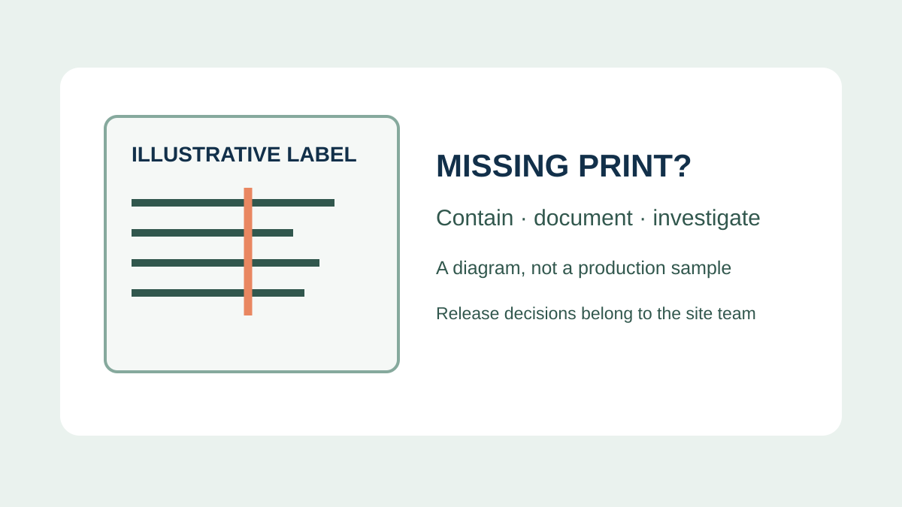
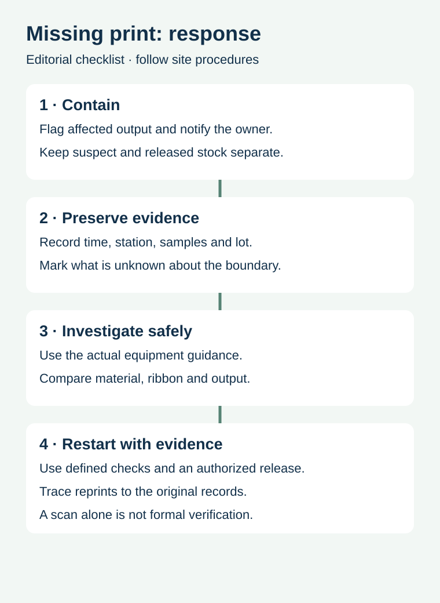

A food packer finds a pale line through a date code on several labels. One label still looks readable; another does not. The urgent question is not only which printer part caused it. The team must also know which packages may have passed through the station since the last reliable check, what information is affected and who can release the stock.
Separate potentially affected output, preserve samples and production records, and use the site's quality procedure to define the investigation and restart. A single successful scan or one clean-looking label cannot establish the status of every item in the interval.

What a repeated blank line can mean
A line of missing or weak output may affect a date, lot code, barcode, ingredient text or other variable information. It can arise from different causes, including the printhead, ribbon or process setup. The position and shape of the defect help describe the symptom but do not, by themselves, prove the cause. Capture the actual example and ask the equipment owner to use the manual for that machine.
For example, the Zebra ZE511/ZE521 guide identifies a damaged printhead element or wrinkled ribbon as possible causes of long missing-print tracks on several labels. That is guidance for a specific printer, not a diagnosis of another device or a universal repair instruction. Maintenance should follow the equipment manufacturer's instructions and the site's safety and food-production procedures.
Define the possible affected interval


Record the last check with reliable evidence, the first identified defect and the time or sequence of discovery. Those points may not define the exact start or end of the defect. If there are gaps in inspection, label them as unknown and let the quality owner determine the appropriate hold and investigation boundary. Do not assume every label before the first observed defect was acceptable.
Trace the station, product SKU, work order, label or packaging lot, shift and affected production records. Where a line serves multiple products or stations, preserve the relationships rather than combining everything under one generic incident. If stock is already packed or dispatched, follow the site's established escalation and traceability procedure.
| Evidence | What to retain | Why it matters |
|---|---|---|
| Sample | Affected and comparison labels or packs, clearly identified | Shows the actual defect and its position |
| Time and sequence | Last documented good check, discovery and unknown intervals | Supports an evidence-based containment decision |
| Production identity | SKU, work order, station, batch and roll references | Connects investigation to physical stock |
| Output conditions | Printer model, applicable settings, ribbon and label construction | Allows the right owners to compare the process |
| Actions and release | Who checked, what changed and which evidence supports restart | Separates attempted correction from authorized release |
Keep the data problem separate from the print problem
Check what was supposed to be printed against the approved job record. A correct data file can still produce an incomplete mark; a crisp mark can still contain the wrong lot or price. A reader that decodes one barcode can help identify data on that sample, but it is not the same as a formal quality verification or a review of all affected labels.
GS1's logistic label guideline distinguishes visual, information and technical barcode checks and calls for ongoing checks in its logistics context. Use the relevant requirements for your own retail or production application. The separate verification versus scanning guide explains the evidence distinction.
Investigate the full overprint chain
Record the actual printer and print method, label surface, ribbon if used, approved artwork and overprint location. A changed material or finish may affect performance, but a missing line should not automatically be blamed on the label converter. Conversely, a recent printer change does not prove the label construction is suitable. Ask the equipment and label suppliers to review the specific evidence within their respective responsibilities.
The overprint-zone guide covers the relationship between a later code and the printed or finished label surface. The thermal supply guide covers method and consumable selection. Neither replaces a site-specific incident investigation.
Make restart and reprint traceable
After the authorized team has addressed the suspected issue, agree a restart check appropriate to the actual content, machine and receiving requirements. Record the output checked, method, responsible person and result. A short check can support a restart decision within the site's rules; it cannot retroactively prove the condition of the earlier production interval.
If labels or packs need rework, keep the original batch identity and the relationship to the replacement output. Define how old and new labels are controlled so a corrected mark does not create a second traceability problem. Disposition of held product belongs to the site's quality and regulatory owners; do not infer that every defect can be corrected by applying another label.
Send the relevant specifications
For a label-supply inquiry, share the label construction, intended overprint area, printer model and method, ribbon reference if relevant, artwork revision and the conditions the finished label must withstand. Include samples or photographs when permitted. Prepare a label specification inquiry; the contact page opens an email draft and lists email or WhatsApp for attachments. Equipment servicing, verification and actual supply scope must be confirmed with the responsible providers.